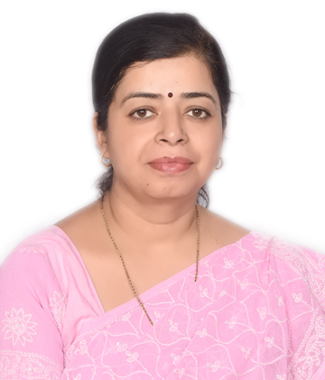

Assistant Professor, Centre for Artificial Intelligence
MITS-DU Gwalior,M.P
Qualified, result-oriented professional with in-depth knowledge and functional experience of over 21 years as a faculty. Proven abilities in managing a wide gamut of activities across Education & Research, Training & Development.
Grants Received
Other Achievements
Referee/Reviewer
PROFESSOR - Electronics and Communication Engineering at Technocrats Institute of
Technology, Bhopal (M.P), India
Mar 2014 - July 2022
PROFESSOR & HOD- Electronics and Communication Engg. at Gyan Ganga Institute of
Technology and Management, Bhopal.
Jul 2009 – Mar 2014
READER & HOD - Electronics & Communication Engineering at Acropolis Institute of
Technology and Research, Bhopal.
Aug 2008 - Jul 2009
ASST. PROFESSOR & HOD- Electronics and Communication Engg at Bansal Institute of
Science and Technology, Bhopal.
Aug 2001 - Apr 2008
LECTURER - Electronics and Communication Engg Dept at Lakshmi Narayana College of
Technology, Bhopal (M.P), India
Feb 2001 - Aug 2001